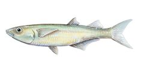

Atherinella venezuelae
| Tinicalo del lago de Valencia | |
|---|---|
|  | |
| Riesgo de extinción | |
 En peligro (UICN) | |
| Clasificación científica | |
| Reino: | Animalia |
| Filo: | Chordata |
| Clase: | Actinopterygii |
| Orden: | Atheriniformes |
| Familia: | Atherinopsidae |
| Género: | Atherinella |
| Especie: | Atherinella venezuelae |
| Nombre binomial | |
|
Atherinella venezuelae Eigenmann, 1920 | |
| Distribución | |
|
Mapa de distribución de Atherinella venezuelae Mapa de distribución de Atherinella venezuelae | |
{kind=link}
Contenido
Información de Evaluación
- Categoría y Criterio Regional: En Peligro B1ab(ii,iii)
- Fecha de Evaluación Regional: 2015
- Evaluadores: Jesús Morales-Campos y Ariany García-Rawlins
- Categoría y Criterio Global: No Evaluado
Justificación
Evaluaciones Previas
1999: En Peligro Crítico (CR)
2008: En Peligro (EN)
Información General
Nombres comunes
Tinicalo del lago de Valencia, Valencia Lake freshwater silverside.
Notas taxonómicas
Sinónimos
Xenomelaniris venezuelae
Descripción
Pez de talla pequeña que mide hasta 7 cm de longitud estándar (desde la punta del hocico hasta la base de la aleta caudal). De aspecto similar a una pequeña sardina, su cuerpo es alargado y un poco comprimido en la parte anterior. Posee una banda plateada que se extiende a ambos lados de la línea media lateral del cuerpo, desde la región opercular hasta la base de la aleta caudal (Mago 1970).
Distribución
Especie endémica de la cuenca del lago de Valencia (Mago 1970), en cuyo interior fue registrada originalmente en el río Tapatapa (El Limón), estado Aragua, y en La Boca, lago de Valencia, estado Carabobo (Eigenmann 1920, Schultz 1949, Luengo 1963). La documentación más reciente corresponde a colecciones de museo en varias localidades del lago valenciano: desembocadura del río Guacara (agosto 1970), Punta Palmita (marzo 1977) e isla El Burro (julio 2001), mientras que en el estado Aragua únicamente se ha reportado en la Hacienda Macapo (junio 2003) (Campo 2003). Es una especie bentopelágica, es decir, que su hábitat o radio espacial en las aguas del lago varía según el sexo. Los machos abundan en la zona litoral mientras que las hembras presentan una distribución sobre todo pelágica o en aguas abiertas del litoral solo en las épocas de desove. Antes se le designaba con el sinónimo Xenomelaniris venezuelae (Mago 1970).
- Sistema: Dulceacuícola
- Bioregión:
- Intervalo altitudinal (m): Temporalmente sin información
- Endémica: Sí
Situación
Aunque su tamaño poblacional es desconocido, se considera que se encuentra bastante amenazada, principalmente por su condición de especie endémica de una cuenca endorreica muy vulnerada (Mago 1970) que abarca menos de 5000 km2 en su extensión. En estudios recientes algunos pescadores del lago de Valencia lo señalan como un pez común, aunque en ese mismo examen fue poco significativa su colecta en pescas exploratorias, lo que evidencia un tamaño poblacional bajo: 7 ejemplares de 546, capturados en 7 localidades (Campo 2003).
- EOO (km2): <5000
- AOO (km2): Temporalmente sin información
- Tendencia Poblacional: Desconocida
Amenazas
Atherinella venezuelae se encuentra amenazada principalmente porque su hábitat presenta un deterioro ambiental acelerado, debido a la degradación de la calidad de sus cursos hídricos por efecto de las descargas de aguas residuales y otros desechos urbanos e industriales, así como por la contaminación no puntual generada por la actividad agropecuaria en sus alrededores. Además, es un taxón con baja tasa reproductiva y depredada por varias especies en su localidad tipo (Ortaz 1985). A esta problemática se suma la presión por la introducción de especies exóticas como la tilapia (Oreochromis mossambicus) y el pez san pedro o petenia (Caquetaia kraussii); la primera de hábitos piscívoros en su etapa juvenil y la segunda con fuerte tendencia ictiófaga, las cuales la utilizan como uno de los componentes principales de sus dietas, incluyendo huevos y larvas (Infante 1985, Señaris y Lasso 1993, Royero y Lasso 1992). Asimismo, se conoce que es buscada por los pescadores para ser utilizada como carnada en la pesca de curvinata (Plagioscion squamosissimus) (Campo 2003).
Conservación
No existe ninguna medida específica para la protección de la especie. No obstante, medidas de carácter administrativo sobre su hábitat favorecen su conservación. La cuenca del lago de Valencia constituye un área bajo régimen de administración especial, y como tal dispone de un Plan de Ordenamiento y Reglamento de Uso (Venezuela 1979, 2000). Ante la problemática ambiental de la cuenca, el Minamb, a través del Programa de saneamiento ambiental integral de la cuenca del Lago de Valencia, ha desarrollado actividades de investigación, estudios, proyectos y ejecución de obras con el apoyo de organizaciones internacionales. Entre dichas actividades destacan el proyecto de Plantas de tratamiento de aguas residuales y el establecimiento de normas técnicas para el control de la calidad de las aguas de la cuenca (MARN-JICA 2001, Venezuela 1999). Es necesario promover el cumplimiento de los objetivos para los cuales fue creada el Área Crítica con Prioridad de Tratamiento de la Cuenca del Lago de Valencia (Venezuela 1979, 2000). Se sugiere la realización de estudios para estimar el tamaño de las poblaciones de la especie, y desarrollar el programa de educación ambiental contemplado en el Plan de manejo y reglamento de uso, para informar al público sobre la problemática que enfrenta la especie y su hábitat (Venezuela 2000).
Autorías
Autores originales
Marcos A. Campo Z. y Mario Ortaz
Colaboradores
Ilustrador
Astolfo Mata
Referencias
- Campo, M. (2003). Evaluación de la actividad pesquera e inventario de ictiofauna en el Lago de Valencia, estados Carabobo y Aragua. Convenio MARN-FUNDACITE Aragua. Proyecto 2001-FCT-01-15-1-2 (PT), Informe Técnico ONDB/IT/418. Oficina Nacional de Diversidad Biológica, Ministerio del Ambiente y de los Recursos Naturales. Caracas. 32 páginas + anexos.
- Campo Z., M. A. y Ortaz, M. (2015). Tinicalo del lago de Valencia, Atherinella venezuelae. En: J.P. Rodríguez, A. García-Rawlins y F. Rojas-Suárez (eds.) Libro Rojo de la Fauna Venezolana. Cuarta edición. Provita y Fundación Empresas Polar, Caracas, Venezuela. Recuperado de: animalesamenazados.provita.org.ve/content/tinicalo-del-lago-de-valencia Vie, 20/04/2018 - 12:54
- Eigenmann, C. H. (1920). The fishes of Lake Valencia, Caracas and of the río Tuy at El Consejo, Venezuela. Indiana University Studies 7(44): 1-13.
- Infante, O. (1985). Aspectos bio-ecológicos de la tilapia Sarotherodon mossambicus (Peters) 1852 (Teleostei, Perciformes, Cichlidae) en el lago de Valencia, Venezuela. Acta Científica Venezolana 36(1): 68-76.
- Luengo, J. A. (1963). La fauna ictiológica del lago de Valencia (Venezuela) y algunas consideraciones sobre las demás hoyas del país y Trinidad. Acta Biológica Venezuélica 3: 319-338.
- Mago, F. (1970). Lista de los peces de Venezuela. Ministerio de Agricultura y Cría, Oficina Nacional de Pesca. Caracas. 275 pp.
- MARN-JICA (2001). Estudio Integral de los Tributarios de la Cuenca del lago de Valencia (1997-2000). Convenio MARN-JICA. Maracay: MARN. 81 páginas + anexos.
- Ortaz, M. (1985). Morfometría y merística de Xenomelaniris venezuelae Eigenmann 1929 (Pisces: Atherinidae) en el lago de Valencia, Venezuela. Acta Científica Venezolana 36(1): 77-80.
- Royero, R. y Lasso, C. (1992). Distribución actual de la mojarra de río Caquetaia kraussii (Steindachner, 1878) (Perciformes: Cichlidae) en Venezuela: un ejemplo del problema de la introducción de especies. Memoria de la Sociedad de Ciencias Naturales La Salle 52(138): 163-180.
- Señaris, J. C. y Lasso, C. (1993). Ecología alimentaria y reproductiva de la mojarra de río Caquetaia kraussii (Steindachner 1878) (Cichlidae) en los Llanos inundables de Venezuela. Publicaciones de la Asociación Amigos de Doñana 2: 1-58.
- Schultz, L. P. (1949). A further contribution to the Ichthyology of Venezuela. Proceeding United States National Museum 99(3235): 107.
- Rodríguez, J. P. y Rojas-Suárez, F. (1999). Libro Rojo de la Fauna Venezolana, segunda edición. PROVITA, Fundación Polar. Caracas. 444 pp.
- Rodríguez, J. P. y Rojas-Suárez, F. (Eds.) (2008). Libro Rojo de la Fauna Venezolana, tercera edición. Provita y Shell Venezuela, S. A. Caracas, Venezuela. 364 pp.
- Venezuela. (1979). Presidencia de la República. Decreto Nº 304 del 20/09/79: Área crítica con prioridad de tratamiento de la cuenca hidrográfica del lago de Valencia. En: Gaceta Oficial Nº 31.829 (26 sep. 1979). Caracas, Venezuela.
- Venezuela. (1999). MAC. Resolución Nº DM/012 del 20/01/99: Regulación para la extracción y plan de manejo experimental del recurso botuto o guarura (Strombus gigas). Ministerio de Agricultura y Cría (MAC). En: Gaceta Oficial Nº 36.656 (8 mar. 1999). Caracas, Venezuela.
- Venezuela. (2000). Presidencia de la República. Decreto Nº 964 del 27/08/00: Plan de ordenamiento y reglamento de uso del área crítica con prioridad de tratamiento de la cuenca del lago de Valencia. En: Gaceta Oficial Nº 37.050 (4 oct. 2000). Caracas, Venezuela.